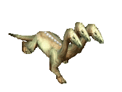
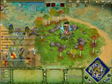

El bunker de Age
Sitio piola :^)
Nosotros
Un grupo de giles con demasiado tiempo en sus manos, como su servidor, como para tomarse el tiempo de ir en el tiempo y crear una página para albergar nuestro autismo tal como si se hubiera vivido en la época del mítico juego del Age of Mythology. En nuestro delicioso sitio podran disfrutar de posts de pésima calidad y con redacción digna de un estudiante de 5to de primaria y replays con estrategias básicas y amateurs. Me he dado la libertad de proveer un link a pesar de que la sección se encuentre directamente abajo de esta.
Replays
Actualizados cada vez que se nos da la gana de subir más replays. Esperen partidas de 3v3 y 4v4 en las que donde no sucede nada hasta el minuto 20 cuando alguien se digna a mandar un ataque con unidades de la Edad Clásica. A menos que sea Ayax, quien raidea todas las partidas con sus Turma que son irritablemente molestos PORQUÉ SIGUES HACIENDONOS ESTO!?
|  Piero vs. Diego | Piero vs. Diego | Piero vs. Diego | Piero vs. Diego |
| Piero vs. Diego | Piero vs. Diego | Piero vs. Diego | Piero vs. Diego |
Estrategias
Arenas Movedizas
Autor: oriep
A pesar que nadie me cree, las arenas movedizas son un poder útil para aparecertele a tu enemigo en su cara y construirle un centro urbano mientras no sosecha nada.
Pasaje al Inframundo
Autor: heThorner
Simplemente usa el poder de la manera mas predecible que puedas imaginar, guárdate el poder hasta la Edad Mítica y sorprende a tus enemigos haciendo una base infiltrada en la esquina del mapa que todos esperan perfectamente porque la sigues usando desde el DOS MIL DOCE.
Team ¿Aló? ¿¡TEAM!?
OriepMains: Set, Isis |
MyDetMains: Ra |
AyaxMains: Gea, Urano |
RenatoMains: Loki |
ShaggyzardMains: Zeus |
heThornerMains: Zeus, Hades |
Jean PaulMains: Loki |
Libro de Visitas :)
Porque un entrañable sitio de la era del módem no estaría completo sin un libro de visitas que promueve el spam y los ataques a nuestros servidores. Estaremos atentos de sus valiosísimos comentarios.
César "Chiqui" López02 de diciembre de 2001 Siempre les digo para jugar y ni mierda, gasté 20 soles en la expansión por las huevas; mejor me compraba una caja de chela. |
Sergio Almeida02 de diciembre de 2001 Mi titán :( |
La mamá de Ernesto02 de diciembre de 2001 Son unos vagos buenos para nada, mi hijo no es promedio nacional por sus vicios, y encima vienen a cagarme la casa con sus gritos. Están baneados, y esta vez va en serio, ninis de mierda. |